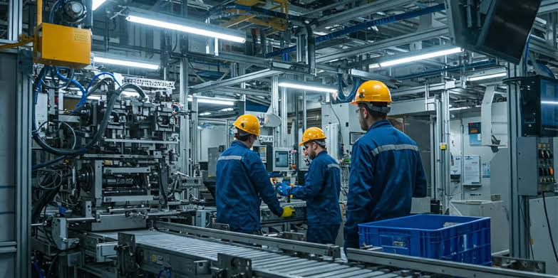

01
Mantenimiento Industrial
Área enfocada en el funcionamiento, la revisión y el mantenimiento de maquinaria y equipos industriales. Permite conocer procedimientos técnicos para contribuir a la operación y conservación de instalaciones productivas.
Área de formación: Industria y mantenimiento técnico.